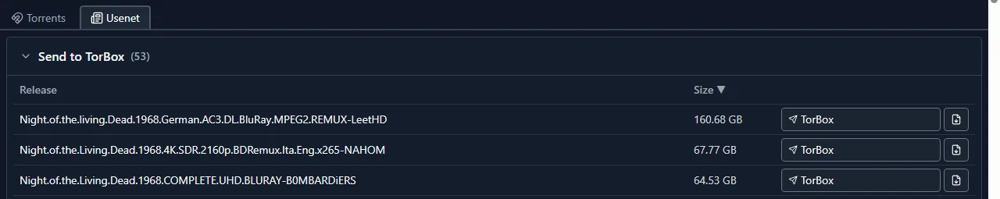

Usenet 新手入门：该买什么，以及它如何与 zurg 配合
要用 zurg 串流 Usenet，你需要一个 Usenet provider 账号（它存放文件），以及 NZB files（它记录每个版本的位置）。indexer 是搜索 NZB 的网站，但你不必自己购买：DMM 的 Usenet 标签页可以为任何电影或剧集找到 NZB。之后 zurg 会直接从你的 provider 播放该版本，无需先下载。
三个组成部分
Usenet 上的一个版本会被发布成成千上万个小分片。NZB 把这些分片列出来，你的 provider 提供它们，zurg 再把它们拼回播放器要请求的视频。
你需要准备
- 一个 zurg 赞助。Usenet 功能在 zurg 的每日构建版中，需要赞助才能使用。免费的公共版 zurg 只支持 Real-Debrid。
- 一个 Usenet 服务商账户。比较套餐时有两个数字很重要：
- Retention（保留天数）：服务器保存帖子的天数。越老的电影和剧集需要越长的保留期。
- Connections（连接数）：套餐允许同时使用的连接数。zurg 会按这个数字读取数据，所以请在配置里填写你套餐的实际数值。
- NZB 文件。你可以从 DMM 的 Usenet 标签页保存，从自己的索引站获取，或者让 Sonarr、Radarr 或 zurg 帮你找。
你不需要：
- 下载客户端，比如 SABnzbd 或 NZBGet。zurg 直接串流资源。对于 Sonarr 和 Radarr，zurg 本身就扮演 SABnzbd 的角色：请参阅 Sonarr 和 Radarr 的 Usenet 配置。
- 存放完整资源的磁盘空间。zurg 只获取覆盖正在播放内容的部分。一个 60 GB 的 remux 不需要 60 GB 的磁盘空间。
- 解压或修复的工具。zurg 可以直接从 RAR 分卷内部播放，并利用资源自带的 PAR2 文件自行重建缺失的分段。
- debrid 账户。Usenet 可以单独使用，也可以和 Real-Debrid、TorBox 一起放在同一个 zurg 库中。
- 索引站会员资格，至少在开始时不需要。请参阅下面的
索引站问题 。
以后值得添加的是第二个服务商。一个服务商丢失的帖子，往往还能在另一个服务商那里找到。当一个服务商没有某个分段时，zurg 会去问下一个。如果只有一个服务商，zurg 就必须读取整个资源才能重建那个分段。请参阅第二个新闻服务器。
zurg 如何使用它
- 一个 NZB 文件放进 zurg 的
nzbs/文件夹。可以是你自己放的，也可以是 Sonarr、Radarr 或 zurg 本身放的。 - 一两秒内 zurg 就会读取它，并把这个版本列入库中，名字与 NZB 相同。
- 你在 Plex、Jellyfin 或 rex 里点击播放。zurg 会从你的提供商那里抓取该位置对应的分段，再交给播放器。拖动到后面的位置时，它会从那里开始抓取。
无需等待下载完成。想一步步设置，请参考 Usenet with zurg。提供商设置和 Docker 相关细节见 Usenet provider。
DMM 在其中的位置
每个电影和剧集页面在 DMM 上,Torrents 旁边都有一个 Usenet 标签页。这里列出 DMM 索引源中该片的 Usenet 资源。只要登录了 DMM,任何人都能使用。

每一行能做什么,取决于你登录时用的账号:
赞助者还能用到另外两个功能:
- zurg 替你搜索 DMM 的索引源。 如果你在 zurg 配置中把 DMM API 密钥填为
dmm_api_key,并且没有自己的索引源,那么 zurg 在获取你的 DMM 想看列表 或 关注列表 时,会搜索 DMM 的索引源。 - 把 DMM 当作 Sonarr、Radarr 和 Prowlarr 的 Newznab 索引源。 在 DMM 的 Newznab 页面 上设置即可。每个密钥每分钟可以搜索 30 次、抓取 15 次,每天可以抓取 250 次。
出现问题时
完整的故障排除表在 Usenet with zurg。还是搞不定？请到 Discord 上的 zurg-support 论坛提问。Getting help 说明了提问时应该包含哪些信息。
常见问题
能给我解释一下 Usenet 系统吗？
Usenet 是一个由新闻服务器组成的网络,用来存放帖子。一个发布版本会被拆成成千上万个小块来发布。服务商把自己服务器的访问权卖给你,NZB 列出了某个发布版本的所有小块,而索引站就是你搜索 NZB 的地方。zurg 读取 NZB 后,直接从你的服务商那里播放这个发布版本。
使用 Usenet 索引站是否必须购买终身会员？
不需要任何索引器就能开始。DMM 的 Usenet 标签页会帮你找 NZB。赞助者的 zurg 也可以直接搜索 DMM 自己的索引器。如果想要更多结果，可以接入自己的索引器，任何 Newznab 索引器都能在 zurg、Sonarr 和 Radarr 里使用，不管你选哪个方案。
Usenet 的文件应该如何命名？
请按发布名称为 NZB 文件命名，比如 Some.Movie.2024.2160p.UHD.BluRay.x265-GROUP.nzb。zurg 会用这个名字作为该发布的文件夹名，Plex 等播放器也是靠它来匹配的。如果 NZB 文件内部自带名称，则会优先使用内部的名称。DMM 的 NZB 按钮保存文件时，已经会使用发布名称了。
zurg 支持 Usenet 吗？
是的，在赞助者可用的每日构建版本中。填入你的服务商信息，把 NZB 放进 nzbs/ 目录，它们就能播放了。Usenet 与 zurg 一文有详细步骤。
什么是 TorBox NNTP？
TorBox 的 Pro 套餐有两个 Usenet 功能。其定价页面显示 Usenet 仅在 Pro 套餐中提供(检查于 2026 年 11 月 14 日)。
- 托管 Usenet 下载。 TorBox 会替你下载整个发布内容,并像其他 TorBox 下载一样提供服务。从 DMM 的 Usenet 标签页或 zurg 的
torbox_nzb提供方发送 NZB 即可。你不需要新闻服务器登录信息。详见 TorBox 托管 Usenet。 - 新闻服务器登录(NNTP)。 在 zurg 中像使用其他提供方一样使用它。它允许 10 个连接。2026 年 9 月的测试显示,它能找到的真实资源库内容比其他三个付费提供方少,所以它最适合作为备用。详见 TorBox 新闻服务器。
一个 Usenet 账号可以在两个地方同时使用吗？
最好别这样做。两个应用共用同一个登录，会共享同一批连接，并且会互相挤掉：服务器可能会断开较旧的连接，让较新的连接进来。有些服务商的条款也禁止共享账号。请为每个 zurg 分配各自的账号。